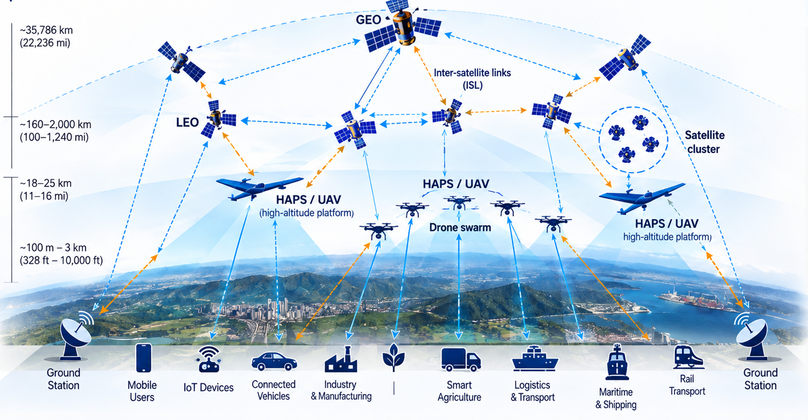

THRUST 01
System Architecture & O-RAN for NTN
Design L/S-band satellite radio payloads and fronthaul, predictive/cooperative beamforming and NTN-aware RU/DU/CU and RIC control for orbital mobility.
Orbital Open Radio Access Network
Advancing open, intelligent and resilient connectivity across satellite, aerial and terrestrial networks through joint communication, computation and energy-aware orchestration.

Open, predictive, compute-aware communication across space, air and ground.
O²-RAN is a collaborative research project supported by the U.S. National Science Foundation (NSF) Directorate for Technology, Innovation and Partnerships (TIP) through its VINES Track 2 program. With $4.8 million in funding, the project is led by Farshad Firouzi of Johns Hopkins University. O²-RAN aims to advance 5G/6G satellite communications and in-orbit edge computing through an AI-native, compute-aware Open RAN architecture designed for non-terrestrial networks. Its research focuses on developing an end-to-end, NTN-adapted O-RAN hardware and software stack, encompassing L/S-band radio units, satellite payloads, distributed and central units (DU/CU), intelligent RAN controllers (RICs), service management and orchestration (SMO), and AI-driven computing and workload management. A central goal is to design, build, and launch an O²-RAN CubeSat into low Earth orbit, enabling experimental validation of satellite direct-to-cell connectivity, onboard AI processing, and space-based edge computing.
Beyond extending wireless coverage, O²-RAN seeks to transform satellites into programmable communication and computing platforms capable of hosting edge services and processing AI workloads directly in orbit. Through intelligent workload placement, AI-driven orchestration, and communication–computation co-optimization, the project advances in-orbit edge computing and future space-based data center capabilities, laying the foundation for open, interoperable, and resilient 5G/6G space–air–ground networks.
Learn about the projectCoordinated development of NTN-ready O²-RAN software, satellite and aerial hardware, intelligent orchestration, and integrated system validation.
Design L/S-band satellite radio payloads and fronthaul, predictive/cooperative beamforming and NTN-aware RU/DU/CU and RIC control for orbital mobility.
Develop compute-aware service models, Near-RT xApps and Non-RT rApps for predictive slicing, workload placement and edge offloading.
Integrate the full NTN O-RAN stack across mission-driven scenarios, validate KPIs and demonstrate interoperability across heterogeneous nodes.
From a working O²-RAN software stack and satellite radio hardware to AI-native control and distributed edge computing.
Project requirements and demonstrations are grounded in three representative applications.
UAV-mounted base stations restore communications in areas affected by damaged or unavailable ground infrastructure.
CubeSat-class L/S-band radio payloads and regenerative NTN functions support a planned direct-to-cell validation pathway, building toward satellite links with user devices.
Coordinated UAVs distribute sensing and AI workloads across aerial, satellite and ground edge resources.
A phased path from architecture validation to integrated space–air–ground demonstration.
Interdisciplinary collaboration with academic and industry researchers.
Five academic institutions and four industry partners advancing Open RAN for non-terrestrial networks, distributed edge intelligence, and integrated system demonstrations.
Academic & industry collaboration
Peer-reviewed research, open-source tools and datasets will be posted when available.
Peer-reviewed papers, technical reports, presentations and research posters.
Content forthcomingO-RAN/NTN extensions, example configurations and publicly available research code.
Content forthcomingValidation datasets, experiment descriptions, benchmark materials and demonstration media.
Content forthcomingFor project information and research collaboration opportunities, visit the contact page.